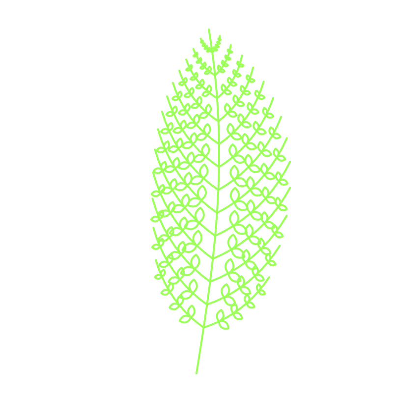
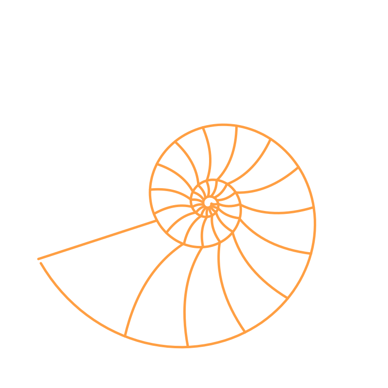
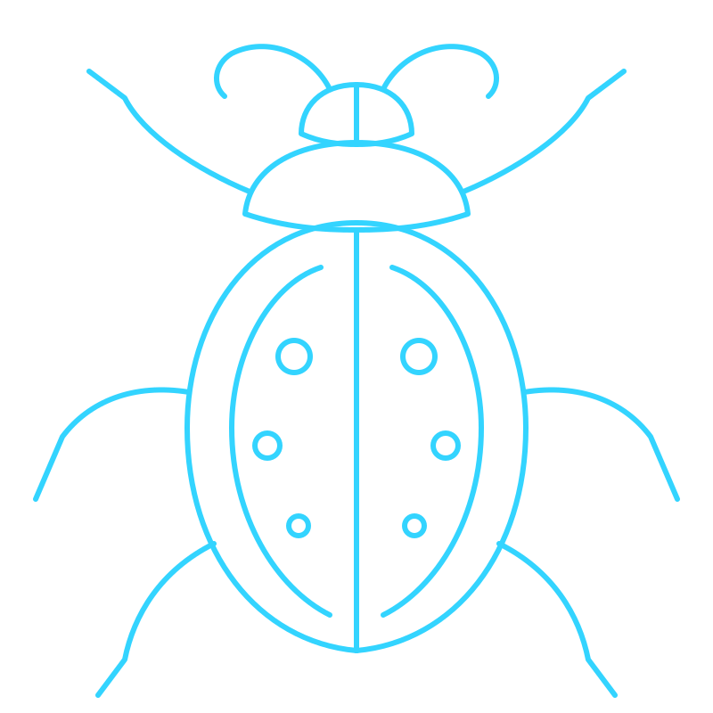

Before you start
You are building a field guide to Flexbox: five short entries, a sidebar of links beside them, and two line drawings placed behind the text. The page you are reading uses the same layout. Scroll it and watch the list of parts on the left.
Project 4 is your own field guide. This tutorial builds that page's skeleton once, with the words supplied, so the layout is familiar before the design is yours.
How this tutorial works
- Predict, then type. Each part opens with a question. Answer it before you write the code. A wrong prediction costs nothing. A skipped one teaches nothing.
- Look after every step. Each step says what you should see. If you see something else, stop there and fix it before you go on.
- Reflect at the end of each part. Two or three sentences, in your own words.
- Write your predictions and reflections in the Pen. The starter's
index.htmlends with a comment named FIELD NOTES. Your answers go there.
AI this week
You can ask CodePen’s AI how something works or why something broke. Don’t ask it to write the page or the stylesheet. The field notes are yours to write.
Part A
Open the starter and read it
- Open the starter: The Flexbox Field Guide starter. CodePen opens a copy in your account.
- Name the Pen
desn368-flexbox-guide. Save it. - Read
index.htmlfrom top to bottom. Find these four things:- the class on
<main> - the two children of that
<main> - the
idof the third<section> - the
hrefof the third link in the sidebar
- the class on
- Read
style.css. It has three areas. At the top,:rootholds the five course colors. Under that, THE LOOK holds a few rules that make the page readable. At the bottom are five banner comments, one for each part of this tutorial. Your CSS goes under the banner for its part. - Click a link in the list at the top of the page. The page jumps to that entry.
Check your four answers
The class is container. Its two children are <nav class="sidebar"> and <div class="content">. The third section’s id is section-3. The third link’s href is #section-3.
The last two answers are a pair. A link whose href is #section-3 jumps to the element whose id is section-3. That is HTML doing the work. No CSS is involved.
Check A
Everything is stacked in one column: the title, the list of links, then five entries. Nothing sits side by side yet.
Part B
Two columns
Predict B
You are about to give .container one declaration: display: flex. Where will .content go? How wide will .sidebar be? Write your answer in FIELD NOTES before you go on.
1. Turn on Flexbox
style.css · under PART B
.container {
display: flex;
}Look
The links and the entries sit side by side. The sidebar is a narrow strip.
display: flex on a parent puts its direct children in a row. .container has two children, so the row has two items. The paragraphs inside .content are grandchildren. They stack the way they always have.
2. Add space
Add two lines to the same rule.
style.css · under PART B
.container {
display: flex;
gap: 1.5rem;
padding: 1rem;
}gap puts space between the two items. padding puts space between the row and the edge of the page.
First use · rem
1rem is the font size of the root element, <html>. Most browsers set that to 16px unless the reader has changed it. So 1.5rem is 24px for most readers. It changes with a reader's default font size. A value in pixels does not.
3. Ask for 300 pixels
style.css · under PART B
.sidebar {
width: 300px;
}Look
The sidebar gets wider. It does not reach 300px. You asked for a width and the browser gave you less.
Flex items are allowed to shrink. The entries hold long paragraphs that ask for a lot of width. The row has less room than its two items ask for, so the browser takes width from both of them, the sidebar included.
4. Hold the width
Add one line to the .sidebar rule.
style.css · under PART B
.sidebar {
width: 300px;
flex-shrink: 0;
}Look
The sidebar widens to its full 300px, and the entries give up that width.
Every flex item starts with flex-shrink: 1, which means “you may make me smaller.” flex-shrink: 0 means “never make me smaller than my width.”
5. Make the sidebar a panel
Add four more lines to the same rule.
style.css · under PART B
.sidebar {
width: 300px;
flex-shrink: 0;
padding: 1rem;
background-color: #12151b;
border: 1px solid #35404d;
border-radius: 8px;
}6. Give the entries the rest
style.css · under PART B
.content {
flex: 1;
}Look
Nothing moves. That is the right result on this page.
The entries already filled the row, because their paragraphs are long. flex: 1 turns that accident into a rule: .content takes whatever width the sidebar and the gap leave. It keeps doing that when an entry holds one short line.
First use · flex
flex is a shorthand for three properties. flex: 1 sets flex-grow: 1, flex-shrink: 1, and flex-basis: 0%. In words: start from no width, then grow into all the space that is left.
Reflect B
In your own words, what does flex: 1 do? Why does the sidebar need flex-shrink: 0?
Part C
Sticky sidebar
The page is long. A reader at the fourth entry has to scroll back to the top to reach the links. A sticky sidebar keeps the links on screen.
Predict C
You are about to add position: sticky and top: 1rem to .sidebar. What will the sidebar do when you scroll the page? Write your answer in FIELD NOTES.
1. Ask for sticky
Write a second .sidebar rule under the PART C banner. CSS allows two rules with the same selector. The browser applies both.
style.css · under PART C
.sidebar {
position: sticky;
top: 1rem;
}Look
Scroll the page. The sidebar scrolls away with everything else. It did not stick.
The code is correct and the result is wrong. Do not delete anything. Find out why.
2. Outline the box
Add one line to the rule you just wrote.
style.css · under PART C
.sidebar {
position: sticky;
top: 1rem;
outline: 2px solid red;
}Look
Scroll to the bottom of the page. The red box runs the whole height of the entries. The sidebar holds five links, and its box is as tall as the page’s whole middle.
3. Read the cause
Two facts meet here.
- Flex items stretch. In a row, every item becomes as tall as the row unless you say otherwise. The entries make the row tall, so the sidebar is stretched to match.
- A sticky box moves only inside its parent. The sidebar’s parent is
.container. The stretched sidebar is exactly as tall as.container, so it has no room to move. It is stuck in place already, and “in place” scrolls off the screen.
4. Stop the stretch
Add one more line.
style.css · under PART C
.sidebar {
position: sticky;
top: 1rem;
outline: 2px solid red;
align-self: flex-start;
}Look
The red box shrinks to wrap the five links. Scroll the page. The sidebar stops 1rem from the top of the window and stays there.
5. Remove the outline
Delete the outline line. It was a tool. The finished rule has three declarations: position, top, and align-self.
First use · position and align-self
Every element starts with position: static, which means it sits where the page’s flow puts it. position: sticky lets a box scroll with the page until it reaches the distance you set with top, then holds it there until its parent runs out.
align-self sets one flex item’s place across the row, top to bottom in this layout. flex-start puts the item at the top of the row at its own height.
Reflect C
Why did the sidebar not stick the first time? What did align-self: flex-start change about the sidebar’s box?
Part D
Sections, links, and color
Predict D
Later in this part you will write h2 { color: var(--yellow); }. What color will the headings be? Where in style.css is that color’s value written? Write your answer in FIELD NOTES.
1. Smooth the jump
style.css · under PART D
html {
scroll-behavior: smooth;
}Look
Click a sidebar link. The page glides to the entry where it used to jump.
2. Make each entry a panel
style.css · under PART D
section {
margin-bottom: 1.5rem;
padding: 2rem;
background-color: #12151b;
border: 1px solid #35404d;
border-radius: 8px;
scroll-margin-top: 1rem;
}Look
Each entry sits in its own panel. Click a sidebar link. The entry stops a little below the top of the window. Its border does not touch the edge.
The last line does that. scroll-margin-top: 1rem tells the browser to leave 1rem above a section when a link scrolls to it.
3. Use the course colors
Look at the top of style.css. The :root rule names five colors. Each name starts with two dashes. These are CSS variables: a name that stands for a value. You use one with var().
style.css · under PART D
header {
border-bottom: 4px solid var(--coral);
}
h2 {
color: var(--yellow);
}
.sidebar a {
color: var(--cyan);
}Which color goes where is your call. Use at least three of the five variables.
4. Write your own code sample
Four of the five entries end with a code sample. The fifth ends with a comment that begins PART D. Replace that comment in index.html with a sample of your own: one CSS rule from this tutorial that you want to remember.
index.html · inside section-5
<pre><code>.sidebar {
outline: 2px solid red;
}</code></pre>First use · pre and code
<pre> shows text exactly as you typed it, with every line break and every space. <code> marks text as code. Start your first line right after <pre><code>, and keep the lines against the left edge of the editor. Any spaces you put in front of a line show up on the page.
Write a CSS sample. An HTML sample needs every < written as <, which is a job for another week.
Reflect D
Where does the browser find the value for var(--cyan)? What happens across the page if you change that one value?
Part E
Place images the way the video does
Watch 30 seconds of Learn CSS Positioning Quickly With A Real World Example, from 4:00 to 4:30. Look at the example site, and skip the code for now. Large, faded images sit behind the text and run off the edge of the page. You are going to do that with two images.
Predict E
You will give an image’s box z-index: -1 and opacity: 0.3. What will each one do? Write your answer in FIELD NOTES.
1. Choose two images
Five line drawings come with this tutorial, one in each course color.

fern.svg
shell.svg- moth.svg

beetle.svg- leaf.svg
Every address starts the same way and ends with the file’s name:
https://code-and-design.org/tutorials/flexbox-tutorial/img/moth.svgYou can use an image of your own. Upload it to the Pen and use its file name as the src.
2. Put the first image in its box
Each entry starts with an empty box: <div class="deco" id="deco-1"></div>. Put an image inside the first one.
index.html · inside section-1
<div class="deco" id="deco-1"><img src="https://code-and-design.org/tutorials/flexbox-tutorial/img/moth.svg" alt=""></div>Look
The image is enormous. It fills the width of the entry and pushes the heading far down the page.
The alt is empty on purpose. This image is decoration. An empty alt tells a screen reader to skip it.
3. Take the box out of the flow
style.css · under PART E
section {
position: relative;
z-index: 0;
}
.deco {
position: absolute;
width: 420px;
}Look
The image is 420px wide. It lies on top of the heading and the first paragraph, and the text has moved back up underneath it.
position: absolute takes a box out of the page’s flow. The text stops making room for it. From then on you place the box yourself, measuring from the edges of the closest ancestor that has a position of its own. position: relative on section makes each entry that ancestor, without moving the entry.
4. Move it to a corner
style.css · under PART E
#deco-1 {
top: -40px;
right: -180px;
}Look
The image moves to the entry’s top right corner. It hangs 180px past the right edge and 40px above the top.
right: 0 would line the image’s right edge up with the entry’s right edge. A negative number pushes it past that edge. top works the same way from the top.
5. Send it behind the text
Add two lines to the .deco rule.
style.css · under PART E
.deco {
position: absolute;
width: 420px;
z-index: -1;
opacity: 0.3;
}Look
The image is behind the text and faint. You can read the words over it, and the sidebar links still work.
z-index sets front-to-back order. A negative number sends a box behind its neighbors. The z-index: 0 you gave section keeps the image in front of the entry’s panel color.
See it fail: delete the section’s z-index line
Delete z-index: 0; from the section rule. The image disappears. It is still on the page, behind the panel’s background color. Put the line back.
6. Cut off what runs past the edge
The image runs past the right edge of the page, so the page can now scroll sideways.
style.css · under PART E
body {
overflow-x: hidden;
}Look
The image is cut off at the right edge of the page. The sideways scrollbar is gone. Scroll down: the sidebar still sticks.
On body only
Advice online often says to put overflow-x: hidden on html and body together. On this page that breaks the sticky sidebar. Tested in Chrome on November 9, 2026. Put the rule on body and nowhere else.
7. Place the second image
Put a different image in a different entry’s box. Then write a rule for that box’s id with your own top and right values.
style.css · under PART E
#deco-3 {
top: 60px;
right: -200px;
}Move both images until the page looks right to you. Change the numbers, look, and change them again. That is how this kind of placement gets done.
- To run an image off the left side, use
leftwith a negative number in place ofright. The image will slide under the sidebar. Add.sidebar { z-index: 1; }so the sidebar stays on top and its links stay clickable. - A negative
toplays the image over whatever sits above its entry. Check that the text up there still reads. - Text has to stay readable. If an image fights the words, lower its
opacityor move it.
Two placed images complete this part. All five is the reach.
Reflect E
What did position: relative on section change about where the image went? Which of your two placements works better, and why?
Part F · Optional
Reach
Do any of these, in any order. None is required.
A focus style for keyboard readers
style.css · under PART F
a:focus-visible {
outline: 3px solid var(--yellow);
outline-offset: 3px;
}Click once on the page, then press Tab. The outline shows which link the keyboard is on.
A back-to-top link
Give the header an id: <header id="top">. Then add a link in the footer: <a href="#top">Back to top</a>. It works for the same reason the sidebar links work.
A hover state for the sidebar
Give .sidebar a a :hover state, the way you did in the Menu States drill. Use a course color through var().
All five images
Place an image in every entry. Vary the sides and the sizes so the page has a rhythm.
Part G
Field notes and turn in
Complete means
- The sidebar and the entries sit in two columns, and the sidebar is 300px wide.
- The sidebar stays on screen while the page scrolls.
- Each entry is a panel, and the page uses at least three color variables through
var(). - The fifth entry ends with a code sample you wrote.
- Two images sit behind the text and run off the edge of the page.
- FIELD NOTES holds eight answers: a prediction and a reflection for each of Parts B, C, D, and E.
- The Pen is deployed and listed on your homepage.
Turn in
- Put your name in the footer in place of “Your Name.”
- Save the Pen. In the bar on the far left, click the Deployment icon, then Deploy Pen. Your live address ends in
.codepen.app. - Open the live address in a private window. Scroll it. Click every sidebar link.
- Open your
desn368-homePen. Add a link to the live address in your list of Pens. Save & Deploy the homepage too. - In Canvas, submit the live address of your field guide.
After any later change, click Save & Deploy. Saving alone does not change the live page.
If something goes wrong
- The sidebar does not stick. Outline it. If the red box is as tall as the entries,
align-self: flex-startis missing or misspelled. If the box is short and it still does not stick, look foroverflow-x: hiddenonhtmland remove it. - An image is missing. Check the address in
srcletter by letter, including.svg. - An image vanished after Part E, step 5. The
sectionrule needs bothposition: relativeandz-index: 0. - A sidebar link will not click. An image is lying over it. Add
.sidebar { z-index: 1; }. - Nothing you type changes the page. Look for a missing
}or;in the rule above the one you are writing.
Sources
The explanations on this page follow these references. Each one goes further than this tutorial does.
- MDN: Basic concepts of flexbox
- MDN: flex and flex-shrink
- MDN: align-items and align-self
- MDN: position and z-index
- MDN: length, for
rem - MDN: Using CSS custom properties
- MDN: scroll-behavior and scroll-margin-top
- MDN: overflow
- MDN: the pre element
- W3C Web Accessibility Initiative: Decorative Images
- Slaying The Dragon: Learn CSS Positioning Quickly With A Real World Example, the source of the placed-image technique in Part E